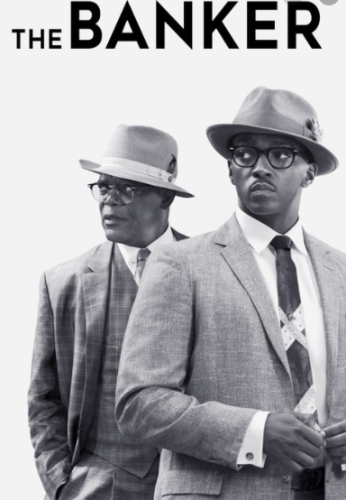

| Hours: | |
| Monday | 11:00am - 10:00pm |
| Tuesday | 11:00am - 10:00pm |
| Wednesday | 11:00am - 10:00pm |
| Thursday | 11:00am - 10:00pm |
| Friday | 11:00am - 10:00pm |
| Saturday | 11:00am - 9:00pm |
| Sunday | 11:00am - 9:00pm |
In the 1950s, truck driver Frank Sheeran gets involved with Russell Bufalino and his Pennsylvania crime family. As Sheeran climbs the ranks to become a top hit man, he also goes to work for Jimmy Hoffa - a powerful Teamster tied to organized crime.

Two African American entrepreneurs in the 1950s hire a white man to pose as the head of their company while they posed as a janitor and a chauffeur and ran the business.
It's open season on Harley Quinn when her explosive breakup with the Joker puts a big fat target on her back. Unprotected and on the run, Quinn faces the wrath of narcissistic crime boss Black Mask, his right-hand man, Victor Zsasz, and every other thug in the city. But things soon even out for Harley when she becomes unexpected allies with three deadly women - Huntress, Black Canary and Renee Montoya.
Two teenage elf brothers, Ian and Barley Lightfoot, go on an journey to discover if there is still a little magic left out there in order to spend one last day with their father, who died when they were too young to remember him.
Super spy Lance Sterling and scientist Walter Beckett are almost exact opposites. Lance is smooth, suave and debonair. Walter is not. But what Walter lacks in social skills he makes up for in smarts and invention, creating the awesome gadgets Lance uses on his epic missions. But when events take an unexpected turn, Walter and Lance suddenly have to rely on each other in a whole new way. And if this odd couple can't learn to work as a team, the whole world is in peril.
Josephine Chesterfield is a glamorous, seductive British woman who has a penchant for defrauding gullible men out of their money. Into her well-ordered, meticulous world comes Penny Rust, a cunning and fun-loving Australian woman who lives to swindle unsuspecting marks. Despite their different methods, the two grifters soon join forces for the ultimate score- a young and naive tech billionaire in the South of France.